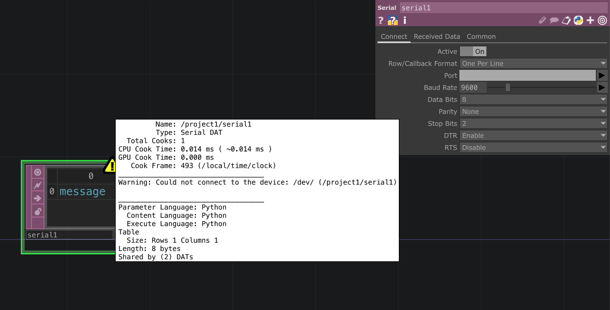
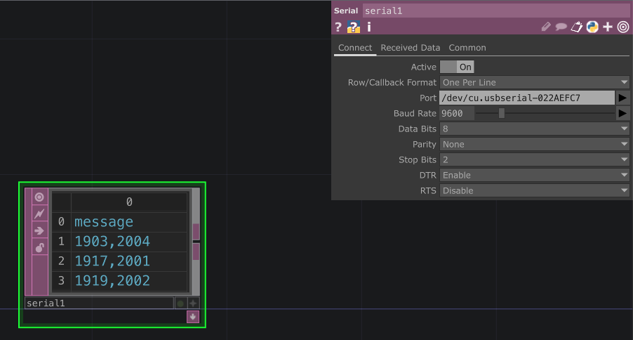
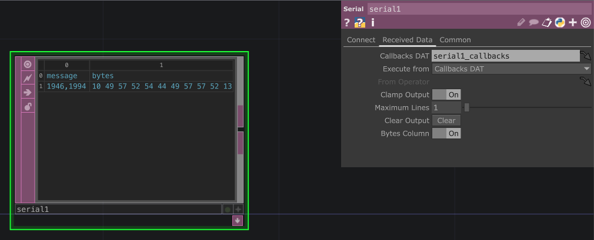
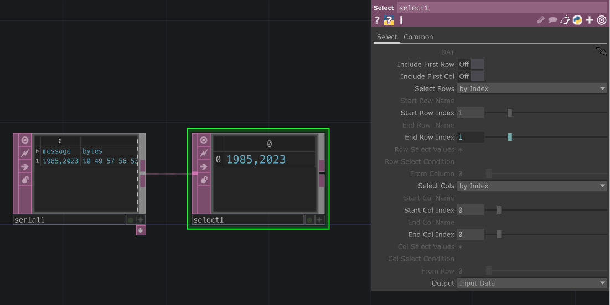
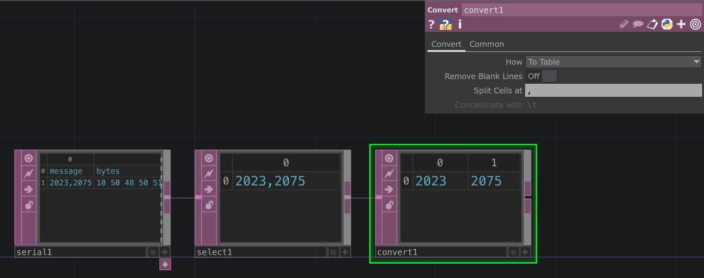
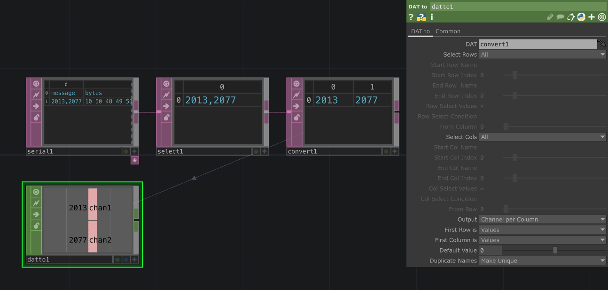
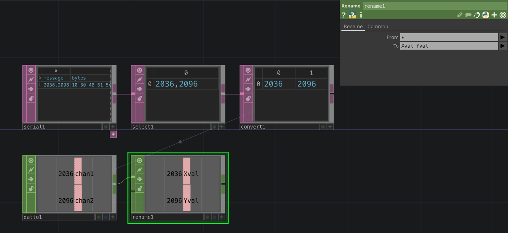
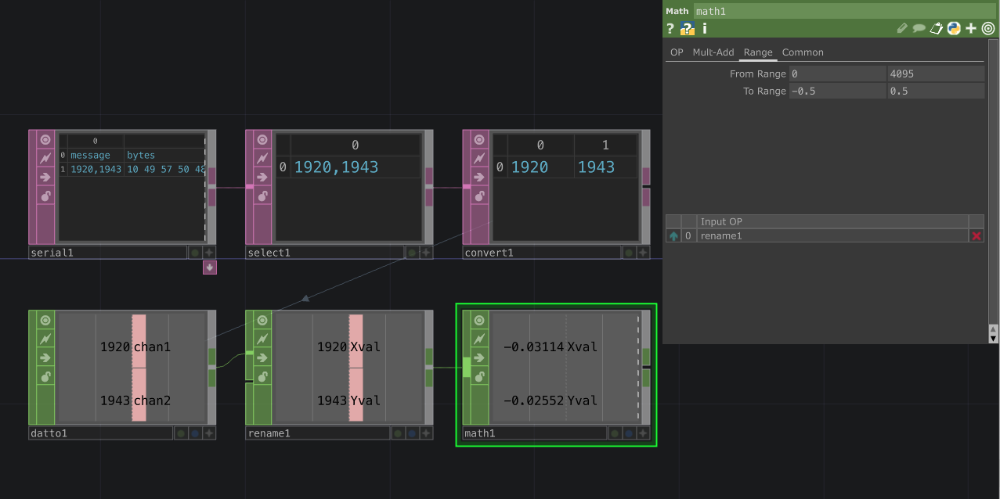
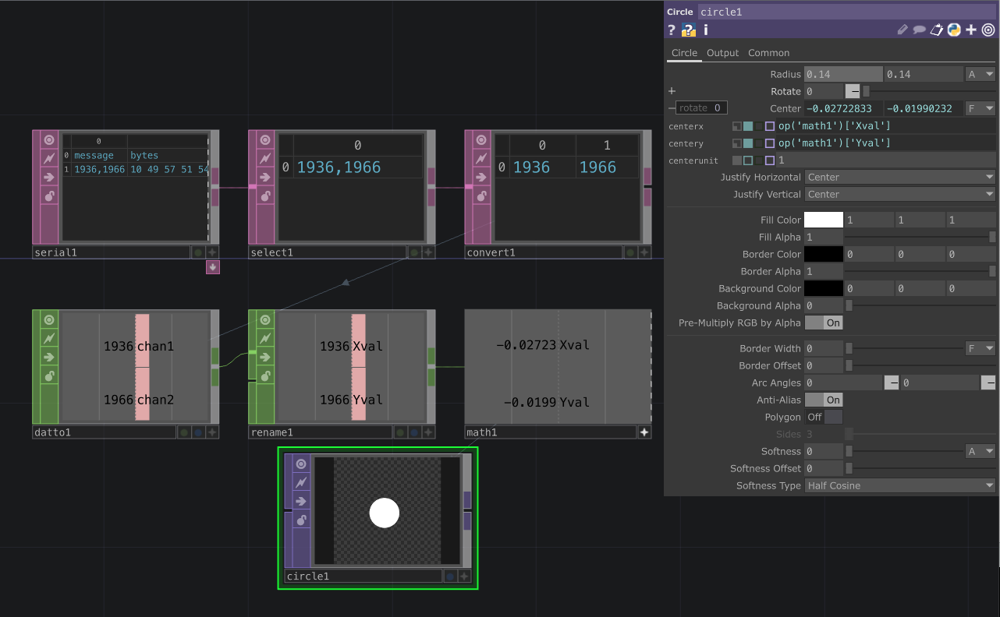

Just like we were able to receive the data from the serial port using the Serial Monitor built into ArduinoIDE we can receive it with other application that have the capability. One important thing to remember is that only one application can be connected to a given serial port at a time. This means that if you are viewing the data with the Serial Monitor you won't be able to receive it in, for example, TouchDesigner. You will need to close one connection to enable the other.
TouchDesigner includes a Serial DAT that allows you to receive serial data from devices like the ESP32. We'll start by creating a network with a Serial DAT.

From the start you might get a warning that the DAT cannot connect to a Serial port. This is because we have not selected a serial port yet. Make sure your Arduino code is uploaded and running - you can use the Serial Monitor in ArduinoIDE to verify that the data is being sent. Don't forget to then close the Serial Monitor before trying to connect with TouchDesigner.
Select the serial port from the Serial DAT parameters to establish a connection. You can double-check which one it is in the Arduino IDE. On Windows it will typically be listed as COM followed by a number, while on macOS it will be listed as /dev/cu.usbserial-XXXX. Your data format will be "One Per Line", since we selected "End-Of-Line" character to finish our transmission in Arduino IDE. Match your baud rate - 9600 in my case. Everything else should be default.

Once the connection is established you should start seeing data appear in the DAT table. Each new line of data will appear as a new row in the table. We can trim the number of lines received since we're only going to need the most recent transmission. In the "Received Data" section of the Serial DAT parameter, set the "Maximum Line" to 1 to only keep the most recent line of data. You can also enable the Bytes column if you want to see the raw byte data.

We need to process the incoming data before we can use it effectively. We'll select only the row and column that contain the data we need, row 1 column 0.

Then we need to split the data by the delimiter used in our Arduino code, in our case a typical comma.

Now we can use the data in TouchDesigner. For example, we can use a DAT to CHOP to convert the data into channels for further processing. Add a DAT to CHOP and connect it to the Serial DAT. Make sure you set the output to "Channel per Column" and both first row and first column are set to be used as Values.

You can use your data now in any way you like, I am going to rename it for easier reference in my network using a Rename CHOP.

Then I will re-map their range to something more convenient. If you remember, ESP32 send values from 0 to 4095. I will map them to a range of -0.5 to 0.5 for my particular use in TouchDesigner.

Finally, I will use my two values to control the position of a small circle with a circle TOP.
